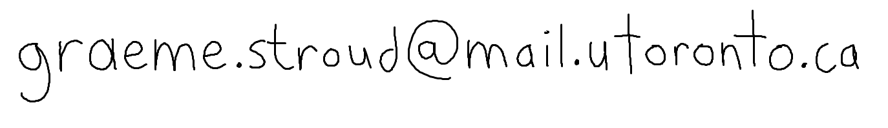

{kind=link}
CSC369 Operating Systems
I developed a kernel script for monitoring OS system calls, a simple ext2-based filesystem, and simulations of synchronized traffic simulation and the OS's page replacement algorithm.
I just completed my final year of undergraduate studies in Computer Science at the University of Toronto. My focus was in the Theory of Computation. I will be in the Masters of Math program (specialization in Computer Science) at the University of Waterloo this fall.
I was born in raised in Toronto, Ontario. As a child, I enjoyed swimming (for fun and occasionally in swim meets),
camping and other outdoor activities as a Boy Scout, and watching
cartoons.
Before attending the University of Toronto, I went to Bowmore Public School and Danforth Collegiate and Technical
Institute.
Here's a picture of me at 10 years old.
At Danforth Collegiate, I was in the MaST program. I was the top student in Calculus and Chemistry. I volunteered in the after school "Math Clinic" program, helping other students study for their math courses (believe me, I was very cool in high school). Along with three other Danforth students, I participated in a high school outreach program run by the University of Toronto Aerospace Team (UTAT). We designed and built a 1U CubeSat as a deployable payload for a hybrid sounding rocket. The payload would record data about its path, orientation, and flight exterior conditions during flight though activation of an Arduino-based circuit during deployment, which I was in charge of programming.
I just completed my senior year at the University of Toronto, with a Computer Science Specialist and a Mathematics Minor. I TA'd CSC263 in the winter 2019 term. I was a member of the Undergraduate Theory Group, where I planned social and course-related events. I will be graduating this June with a H.B.Sc. in Computer Science.
I worked last fall with Aleksandar Nikolov on a project in the research area of Discrepancy Theory. We explored different geometric discrepancy approximation algorithms. We in particular looked at algorithms for halfspaces and how they could be improved. We deduced a tight lower bound for a costly subprocedure of the algorithm, suggesting there is not much room for improvement for the algorithm. Soon you can read more about my work here.
In the summer of 2018, I worked under the supervision of Azadeh Farzan on a project where the goal is to turn sequential code on arrays into parallel code. More information of this line of research can be found here. I will hopefully have more information to share of my project soon.
Image Source: Geometric Discrepancy: An Illustrated Guide by Jiri Matousek

I have taken many exciting courses at UofT.
I developed a kernel script for monitoring OS system calls, a simple ext2-based filesystem, and simulations of synchronized traffic simulation and the OS's page replacement algorithm.
I implemented GLSL shaders and a raytracer.

In a group project, we designed a software called Unslack. It's a web extension that allows users to choose sites to blacklist in order to stay focused when using the internet.

I completed the Theory focus at UofT.

You can find more information on my CS course projects on my github page.
Over the past few years I have accumulated a diverse set of valuable programming skills.
Known since 2012.
Known since 2015.
Known since 2016/2017.
Known since 2015.
Known since 2017.
Known since 2017.
My first programming experience was HTML when I was 14, I've known it more professionally since 2017.
Since 2017.
Since 2018.
Clubs: Undergraduate Theory group
Hobbies: Swimming, saxophone, kayaking. Watching (too much) TV in my spare time.
{kind=link}